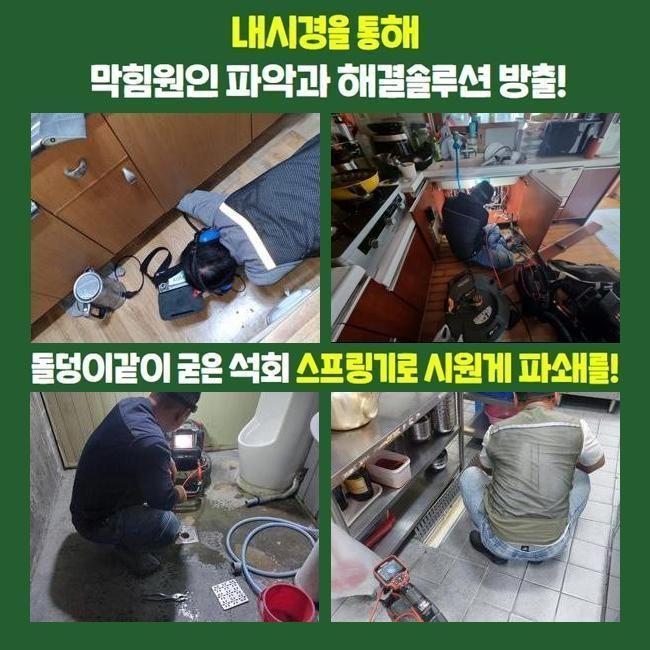
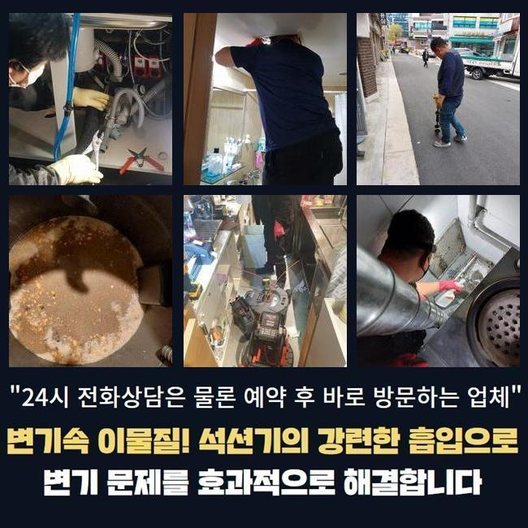
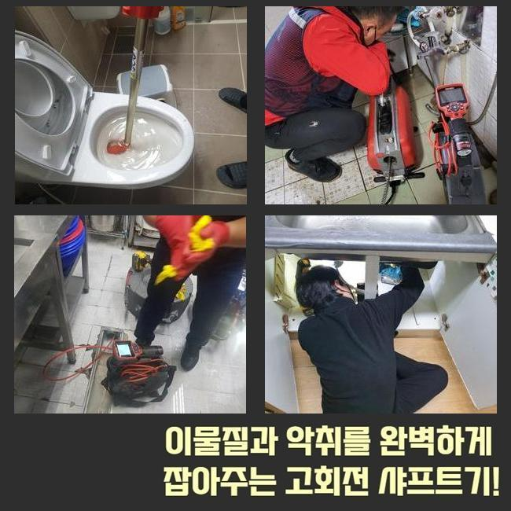
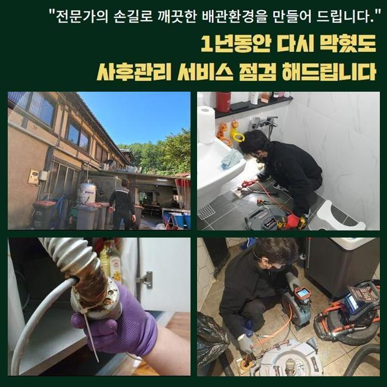
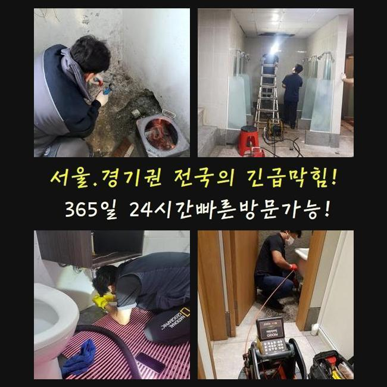

🏠 포천 신읍동세탁실역류 창수면 맨홀막힘 누수탐지공사
용인 하수구막힘 전문 시공 후기

📋 작업 개요
- 위치: 용인
- 서비스 유형: 하수구막힘, 배관막힘, 맨홀막힘, 누수수리, 역류해결, 배관청소, 고압세척, 설비공사
- 작업 일시: 2024. 12. 1. 16:43
- 업체명: 하수구수사대 (010-5615-2118)
🔍 문제 상황
포천 신읍동세탁실역류 창수면 맨홀막힘 누수탐지공사
하수관로에 오류가 발생해 막혀버리는 상황이 발발했다는 상황을 전해듣고 정밀한 진단을 실시하고자 곧장 방문드렸습니다
하수시스템은 가볍게 해결되지 않고 역류한다던지 악취들이 올라오는 발전된 양상들로 진행될 수 있는 확률이 높으므로 원활한 처리가 필요합니다
문제가 분명함을 보신 시점에서는 이왕이면 처리를 하시는 것이 중요한데요
덧붙여 관로의 문제는 적절한 조치가 없다면 문제가 불거지는 시간까지 빨라지므로 빠른 수습이 중요한것이죠
이제부턴 하수시스템의 중요성들과 연관된 증세가 마주했을 때에 어떤식으로 타개하는게 제대로 된 해결책인지 저희업체가 내방했었던 작업들을 기반으로 설명할게요
의뢰인의 의뢰로 저희의 전문진이 달려간 장소는 다가구 건물이였고 세대들이 공용배수관을 공유했었던 구조로 파악되었습니다
갑자기 물이 안빠져 라인을 따라 여러 문제들이 수면 위로 떠올랐고 덧붙여 하단세대는 수도들을 쓸 수 없을만큼 증상들이 심했는데요

🔎 원인 분석
💡 전문가 진단: 정밀 진단 장비를 사용하여 슬러지의 고착 여부를 판명하고 타격/세척 작업을 실시했습니다.
저희들은 확산을 축소시키고자 가용되어야할 기기를 마련한 뒤 서둘러 계신 곳으로 도달했습니다
대체로 배수가 안되는 문제는 다양한 구간에서 생기게 될 여지가 있죠
전 가구가 공용배수관을 쓰기에 구간별로 막혔을 땐 거시적으로 불편들을 전가시키는데요
이러한 상황 속에서 시기적절한 수습이 진행되지 않는다면 물샘으로까지 발전되어 예상치못한 피해규모를 입히게되요
배수장애의 주된 까닭은 구간 별로 잔존하는 기름성분입니다
평소에 빠지는 오수엔 집수시설까지 흘러가지 못하는 잔여물질이 존재합니다
그 가운데에서 머리카락등이나 식자재들은 제대로 배출이 안되어 하수배관 내측에서 켜켜히 누적되죠
해당 오염물이 일정한 위치들에 쌓인다면 배수의 흐름들을 못하게하면서 막힘증세가 나타나는것이죠
이러한 문제가 분명함을 막아주기 위해선 거름망들을 놓는다거나 때에 맞춰 배수관 전용 용액들을 부은 후 청소해주는 것도 좋은데요

🔧 작업 과정
막혀버리는 상황이 생겨났을 경우 안정적인 방식은 전문인의 조언에 따르는 것입니다
그렇지만 금액문제들로 보통은 용도와 맞지 않는 용품들로 대처를 해보시는 현장을 많이 봐왔죠
이같은 방식들은 비장기적인 방식들에 그치고 덧붙여 잔여물질을 심층부로 흘러가게 만들어 또 다른 문제들을 생겨나게끔 한다는 것이죠
그렇기에 해당 방법들은 문제의 증상을 안좋게하므로 신중함이 필요하겠습니다
저희업체는 해당 상황들을 근본적으로 해결하고자 내시경등을 사용하여 하수관을 구석구석 검사해봐요
내시경장비라면 하수관을 보여주는 장비로서 밖에서 진찰이 안되는 구조적인 결함을 체크하고 이물의 양상을 손쉽게 파악하게 됩니다
이번 계신 곳으로서는 공동라인을 필두로 넓은 범위에 이물들이 자리했던 상태였어요
보통는 전동 스프링기라던지 샤프트장치를 운용하여 잔해를 청소하겠으나 위같이 길게 막혔다면 고압노즐분사가 효과면에서 더 뛰어나죠
고압수의 청소방법은 배수관에 적합한 노즐부분을 골라 물의 압력으로 각 라인을 세척해주는 방식인데요
이 방식은 돌처럼 굳어진 잔해들을 깨끗하게 제거해주며 배수관이 오랫동안 배수가 안된 상태일때 많은 도움이 되는데요
허나 하수관의 내구성과 관련하여 고압수청소 타겟이 되는 하수관에 균열을 발생시키기도 하므로 문제가 될 만한 부분은 진단하고 중간에 범위를 기준으로 수압을 조정해주는 것이 중요한 요소입니다
고압수청소를 지속한다면 오래도록 누적된 오염원들이 사라지는것을 볼 수 있죠
청소 이후에 각 구간을 내시경장치로 관찰하면 스케일링이 끝난 배수관의 컨디션이 확연히 다르다는걸 체크할 수 있어요
이처럼 각 기기들을 운용하면 하수구 이러한 결함들을 수월하게 처리할 수 있답니다


✅ 작업 완료
저희업체는 고객님들이 물빠짐에 이상이 생겨 난처한 상황에 빠지셨다면 서둘러 해결코자 즉시 달려갈 준비를 하고 있답니다
통수 불능 상태를 마주했을 때 주저말고 전화하시면 서둘러 도와드릴게요
이러한 문제들로 인한 피해를 막고자서는 정기적인 청소나 관리들이 가장 중요하죠
평상시에 신경써주시는 방법들로 통수 관련 사고가 다가오기전에 예방에 힘쓰는것이 좋겠습니다



⚠️ 베란다 누수 및 방수 관리 방법
- ✅ 비가 많이 올 때 창틀 주변이나 아래층 천장에 얼룩이 생기는지 정기적으로 확인해 보세요.
- ✅ 우수관 주변 실리콘 마감이 들뜨거나 깨진 틈새가 있는지 손상 여부를 수시로 체크하세요.
- ✅ 베란다 바닥 타일의 줄눈(메지)이 소실되면 그 틈으로 물이 침투하여 누수가 유발됩니다.
- ✅ 누수 의심 증상 발견 시 방치하면 아래층 손실이 커지므로 즉시 전문가의 진단을 받으십시오.
💡 핵심 정리
- 확실한 장비 작업(내시경 점검 및 샤프트 스케일링)으로 원인을 뿌리 뽑습니다.
- 작업 후 1년 이내에 동일한 부위 재발 시 100% 무상 A/S 서비스를 보장합니다.
- 서울 · 경기 · 인천 전 지역에 24시간 언제든 긴급 출동할 수 있도록 항시 대기 중입니다.
❓ 자주 묻는 질문 (FAQ)
🚨 용인 하수구막힘 문제로 고민이신가요?
정확한 원인 진단과 확실한 시공으로 재발 없는 해결을 약속드립니다.
24시간 긴급 출동 | 서울 · 경기 · 인천 전지역 | 1년 내 재발 시 무상 A/S